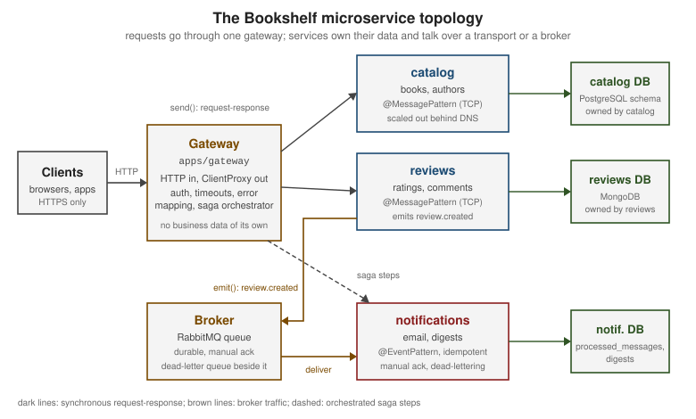

Microservices Architecture & Patterns
|
This content was generated with the assistance of AI and should be verified against the official documentation before being relied on in production. |
This page is written against NestJS 12.1 (npm 12.1.2), TypeScript 6 (6.0.3), Node.js 20.19+ or 22.12+, Express 5 and Fastify 5, and was checked on 2026-10-02. It uses @nestjs/microservices 12.1, @nestjs/config 12.0, @nestjs/typeorm 12.0 with TypeORM 1.1 and better-sqlite3, and RxJS 7.8. The examples build with the Nest 12 CLI and are tested with Vitest and Test.createTestingModule: the catalog, reviews and notifications services listen on real TCP sockets inside one process, with a gateway in front of them. The broker and registry parts compile and are exercised against stand-ins rather than a RabbitMQ broker or a Consul agent (see What the examples are tested against).
This page is about the system around the services. How a single service receives messages (@MessagePattern(), @EventPattern(), ClientProxy, context objects, serialization) is covered in Microservices Fundamentals, and each transport in detail in Microservice Transports. The language-independent theory (sagas, outbox, CQRS, event-driven design) lives in the architecture section; here it is applied to NestJS and to the running example, the original Bookshelf application.
The Bookshelf topology
By this point Bookshelf is a monolith with an HTTP API, a notifications module and a queue. This page splits it into four deployables: a gateway that is the only thing clients talk to, a catalog service that owns books and authors, a reviews service that owns ratings and comments, and a notifications service that sends email and digests. The services answer requests over a Nest transport (TCP in the examples), and the broker carries the events nobody waits for.

When to split, and when not to
A microservice architecture buys independent deployment, independent scaling and team autonomy, and charges for them with network failures, distributed data and operational cost. Whether that trade is worth it is an architecture decision, not a NestJS one: start from choosing a monolith or microservices, the benefits and drawbacks and, when you already have a monolith, the monolith to microservices migration path. Split along bounded contexts and team boundaries, not along technical layers; a "database service" or a "validation service" is a distributed monolith.
NestJS makes the cheap middle step easy. Because a microservice is "a Nest application with a different entry point", a module can be written once and exposed over HTTP and a transport at the same time with a hybrid application. Extracting it later means moving the module into its own main.ts. connectMicroservice() registers the handlers immediately, and the inheritAppConfig option makes the connected microservice use the global pipes, guards, interceptors and filters of the host application (call the useGlobal*() methods before connectMicroservice()).
import { INestApplication, Type } from '@nestjs/common';
import { NestFactory } from '@nestjs/core';
import { MicroserviceOptions, Transport } from '@nestjs/microservices';
// A modular monolith that already answers on a transport: extract it later by moving the module.
export async function startHybrid(module: Type<unknown>, httpPort: number, tcpPort: number): Promise<INestApplication> {
const app = await NestFactory.create(module);
app.connectMicroservice<MicroserviceOptions>(
{ transport: Transport.TCP, options: { host: '127.0.0.1', port: tcpPort } },
{ inheritAppConfig: true },
);
await app.startAllMicroservices();
await app.listen(httpPort);
return app;
}The example ran: the CatalogModule listened on an HTTP port and on a TCP port in the same process, and a ClientProxy send() over TCP returned a book.
Monorepo: apps and shared libraries
A single repository with one Nest workspace is the default way to host these services. Each service is an application (its own main.ts, its own build, its own container image); code several services must share is a library under libs/. The workspace is created by generating the second and later projects with the CLI.
nest g app catalog
nest g app reviews
nest g app notifications
nest g lib contracts # prompts for the alias prefix, default @app
nest build notifications # builds one app plus the libraries it imports
nest start notificationsThe CLI turns the project into a monorepo ("monorepo": true) and records every project in nest-cli.json, and registers each library as a path alias in tsconfig.json (@app/contracts). This is the nest-cli.json the commands above produced, with the gateway application as the default project:
{
"$schema": "https://json.schemastore.org/nest-cli",
"collection": "@nestjs/schematics",
"sourceRoot": "apps/gateway/src",
"monorepo": true,
"root": "apps/gateway",
"compilerOptions": {
"deleteOutDir": true,
"builder": "tsc",
"tsConfigPath": "apps/gateway/tsconfig.app.json"
},
"projects": {
"catalog": {
"type": "application",
"root": "apps/catalog",
"entryFile": "main",
"sourceRoot": "apps/catalog/src",
"compilerOptions": {
"tsConfigPath": "apps/catalog/tsconfig.app.json"
}
},
"contracts": {
"type": "library",
"root": "libs/contracts",
"entryFile": "index",
"sourceRoot": "libs/contracts/src",
"compilerOptions": {
"tsConfigPath": "libs/contracts/tsconfig.lib.json"
}
},
"gateway": {
"type": "application",
"root": "apps/gateway",
"entryFile": "main",
"sourceRoot": "apps/gateway/src",
"compilerOptions": {
"tsConfigPath": "apps/gateway/tsconfig.app.json"
}
},
"notifications": {
"type": "application",
"root": "apps/notifications",
"entryFile": "main",
"sourceRoot": "apps/notifications/src",
"compilerOptions": {
"tsConfigPath": "apps/notifications/tsconfig.app.json"
}
},
"reviews": {
"type": "application",
"root": "apps/reviews",
"entryFile": "main",
"sourceRoot": "apps/reviews/src",
"compilerOptions": {
"tsConfigPath": "apps/reviews/tsconfig.app.json"
}
}
}
}What belongs in libs/, and what does not, decides whether the monorepo stays a set of services or turns into one program:
-
Share contracts, not behaviour. Pattern names, message and event types and error shapes are the API between services, so they live in one library (
libs/contracts). Every service imports the same TypeScript types, and a change to a message breaks the build of every consumer. -
Share infrastructure helpers. Logging, configuration schemas, health checks, the idempotent-consumer helper below.
-
Do not share domain code or entities. A
Bookentity in a shared library couples every service to one schema and defeats the database-per-service rule below. -
Version messages deliberately. Services deploy independently, so for a while two versions of a message are in flight. Add fields, do not rename or remove them, and keep consumers tolerant of unknown properties.
// libs/contracts/src/contracts.ts: the only code the services share.
export const Patterns = {
BookGet: { cmd: 'book.get' },
BookCreate: { cmd: 'book.create' },
BookDelete: { cmd: 'book.delete' },
ReviewList: { cmd: 'review.list' },
ReviewCreate: { cmd: 'review.create' },
DigestSchedule: { cmd: 'digest.schedule' },
DigestCancel: { cmd: 'digest.cancel' },
ReviewCreated: 'review.created',
} as const;
export interface BookDto {
id: string;
title: string;
}
export interface ReviewCreatedEvent {
eventId: string; // unique per business event, reused on every redelivery
reviewId: string;
bookId: string;
rating: number;
}
export const CATALOG_CLIENT = 'CATALOG_CLIENT';
export const REVIEWS_CLIENT = 'REVIEWS_CLIENT';
export const NOTIFICATIONS_CLIENT = 'NOTIFICATIONS_CLIENT';An application in the workspace imports the library through the alias and is otherwise an ordinary microservice. The notifications main.ts:
import { NestFactory } from '@nestjs/core';
import { MicroserviceOptions, Transport } from '@nestjs/microservices';
import { Patterns } from '@app/contracts';
import { NotificationsModule } from './notifications.module.js';
async function bootstrap() {
const app = await NestFactory.createMicroservice<MicroserviceOptions>(NotificationsModule, {
transport: Transport.TCP,
options: { host: '0.0.0.0', port: Number(process.env.PORT ?? 3002) },
});
app.enableShutdownHooks();
await app.listen();
console.log(Object.keys(Patterns).length);
}
await bootstrap();nest build notifications compiled the application together with @app/contracts, and running the output started the microservice and printed the pattern count. The CommonJS and ESM templates differ only in the .js import extensions the ESM template needs (relative imports in the examples carry them; path aliases do not). Workspace builders, --all and --parallel are covered in Project Structure & Workspaces.
Database per service
A service owns its data and nobody else reads or writes it. Other services get it by asking the owner (a message), or by keeping their own copy built from the owner’s events. A shared schema is the fastest way to a distributed monolith: any table change becomes a cross-team release, and any service can bypass the rules the owner enforces. See the microservices.io pattern database per service for the trade-offs.
In practice "database per service" means a separate database or at least a separate schema with a separate role, and one connection configuration per service, read from that service’s own environment:
import { Module } from '@nestjs/common';
import { ConfigModule, ConfigService } from '@nestjs/config';
import { TypeOrmModule } from '@nestjs/typeorm';
// Each service wires exactly one database, and it is the only service that holds credentials for it.
@Module({
imports: [
ConfigModule.forRoot({ isGlobal: true }),
TypeOrmModule.forRootAsync({
inject: [ConfigService],
useFactory: (config: ConfigService) => ({
type: 'better-sqlite3' as const, // 'postgres' in production, with config.getOrThrow('NOTIFICATIONS_DATABASE_URL')
database: config.getOrThrow<string>('NOTIFICATIONS_DB_FILE'),
}),
}),
],
})
export class NotificationsDatabaseModule {}Source: NestJS documentation: TypeORM and NestJS documentation: Configuration. The page on TypeORM covers the module; the same rule applies with Mongoose, Prisma or Drizzle.
Three consequences follow, and each has a standard answer:
-
No joins across services. The gateway composes the response (next section), or the service that needs the data keeps a read model fed by events.
-
No cross-service transactions. Use a saga with compensation (below) instead of a distributed transaction; see why not distributed transactions.
-
Environment values are strings.
ConfigService.getOrThrow<number>('PORT')only changes the static type; the value read from the environment is still a string, andcreateMicroservice()rejects a string port atlisten(). The example run hit exactly that, so the code below converts withNumber(…)or validates the configuration with a schema.
An API gateway in Nest
Clients should not know how many services exist, where they run or which protocol they speak. A gateway is the single entry point: it authenticates, applies rate limits, routes, composes responses from several services and translates failures to HTTP. A Nest application is a natural gateway because it already has guards, pipes, interceptors and filters for those cross-cutting concerns (see the request lifecycle); the only new part is that its providers call ClientProxy instances instead of repositories.
First, the clients. The ServiceClientsModule registers one ClientProxy per service from configuration, and every gateway and service module that needs to call another service imports it.
import { Global, Module } from '@nestjs/common';
import { ConfigModule, ConfigService } from '@nestjs/config';
import { ClientsModule, Transport } from '@nestjs/microservices';
import { CATALOG_CLIENT, NOTIFICATIONS_CLIENT, REVIEWS_CLIENT } from './contracts.js';
function tcpClient(name: string, prefix: string) {
return {
imports: [ConfigModule],
name,
inject: [ConfigService],
useFactory: (config: ConfigService) => ({
transport: Transport.TCP as const,
options: {
// Kubernetes: 'catalog.bookshelf.svc.cluster.local'; Compose: 'catalog'
host: config.getOrThrow<string>(`${prefix}_HOST`),
port: Number(config.getOrThrow<string>(`${prefix}_PORT`)), // env values are strings
},
}),
};
}
@Global()
@Module({
imports: [
ClientsModule.registerAsync([
tcpClient(CATALOG_CLIENT, 'CATALOG'),
tcpClient(REVIEWS_CLIENT, 'REVIEWS'),
tcpClient(NOTIFICATIONS_CLIENT, 'NOTIFICATIONS'),
]),
],
exports: [ClientsModule],
})
export class ServiceClientsModule {}Then the controller. It calls the catalog and reviews services in parallel, puts a timeout on every call, and maps what comes back into HTTP semantics.
import {
BadGatewayException,
Body,
Controller,
Get,
GatewayTimeoutException,
Inject,
InternalServerErrorException,
NotFoundException,
Param,
Post,
ServiceUnavailableException,
} from '@nestjs/common';
import { ClientProxy } from '@nestjs/microservices';
import { firstValueFrom, TimeoutError, timeout } from 'rxjs';
import { BookDto, CATALOG_CLIENT, Patterns, REVIEWS_CLIENT } from './contracts.js';
import { PublishBookSaga } from './publish-book.saga.js';
import { SagaFailedError } from './saga.js';
@Controller()
export class GatewayController {
constructor(
@Inject(CATALOG_CLIENT) private readonly catalog: ClientProxy,
@Inject(REVIEWS_CLIENT) private readonly reviews: ClientProxy,
private readonly publishBook: PublishBookSaga,
) {}
/** One round trip per service, in parallel, translated into HTTP semantics. */
@Get('books/:id')
async getBook(@Param('id') id: string) {
const [book, reviews] = await Promise.all([
this.call<BookDto>(this.catalog, Patterns.BookGet, { id }),
this.call<unknown[]>(this.reviews, Patterns.ReviewList, { bookId: id }),
]);
return { ...book, reviews };
}
@Post('reviews')
addReview(@Body() body: { bookId: string; rating: number }) {
return this.call(this.reviews, Patterns.ReviewCreate, body);
}
@Post('books')
async publish(@Body() { title }: { title: string }) {
try {
return { id: await this.publishBook.publish(title) };
} catch (error) {
if (error instanceof SagaFailedError) {
throw new ServiceUnavailableException({ failedStep: error.failedStep, compensated: error.compensated });
}
throw error;
}
}
private async call<T>(client: ClientProxy, pattern: object, data: unknown): Promise<T> {
try {
return await firstValueFrom(client.send<T>(pattern, data).pipe(timeout(2000)));
} catch (error) {
if (error instanceof TimeoutError) throw new GatewayTimeoutException();
const status = (error as { status?: number }).status;
if (status === 404) throw new NotFoundException((error as { message?: string }).message);
if (typeof status === 'number') throw new BadGatewayException();
throw new InternalServerErrorException();
}
}
}Source: NestJS documentation: Microservices overview, handling timeouts and NestJS documentation: Microservices exception filters.
The services behind it are plain controllers. The catalog service is the owner of book data and throws RpcException with an object, which Nest sends back as is:
import { Controller, Module } from '@nestjs/common';
import { MessagePattern, Payload, RpcException } from '@nestjs/microservices';
import { randomUUID } from 'node:crypto';
import { type BookDto, Patterns } from './contracts.js';
@Controller()
export class CatalogController {
// The catalog owns this data: no other service reads it directly.
private readonly books = new Map<string, BookDto>([['b1', { id: 'b1', title: 'Dune' }]]);
@MessagePattern(Patterns.BookGet)
get(@Payload() { id }: { id: string }): BookDto {
const book = this.books.get(id);
if (!book) throw new RpcException({ status: 404, message: `Book ${id} not found` });
return book;
}
@MessagePattern(Patterns.BookCreate)
create(@Payload() { title }: { title: string }): BookDto {
const book = { id: randomUUID(), title };
this.books.set(book.id, book);
return book;
}
@MessagePattern(Patterns.BookDelete)
delete(@Payload() { id }: { id: string }): { deleted: boolean } {
return { deleted: this.books.delete(id) };
}
size(): number {
return this.books.size;
}
}
@Module({ controllers: [CatalogController] })
export class CatalogModule {}With the three services on TCP behind the gateway, the equivalent requests answer:
curl -s localhost:3000/books/b1
curl -s -o /dev/null -w '%{http_code}\n' localhost:3000/books/nope{"id":"b1","title":"Dune","reviews":[{"id":"r1","bookId":"b1","rating":5}]}The second call returned 404 with {"message":"Book nope not found","error":"Not Found","statusCode":404}.
Points the example depends on:
-
send()is cold. The message is only sent when the observable is subscribed to. UsefirstValueFrom()(orlastValueFrom()) in request handlers, and subscribe explicitly toemit()when you do not need the result, otherwise nothing is sent. -
Always apply
timeout(). Without it a request to a service that is down waits for the transport’s own failure handling. ATimeoutErrorbecomes504here, and a downstream failure502. -
The error on the client is the object the server threw. An
RpcExceptioncarrying an object arrives as that object, so the gateway can read astatusand translate it. A thrown plainErroris reported as a generic internal server error; agree on an error shape in the contracts library. -
Express or Fastify makes no difference to the gateway logic. The HTTP adapter only affects the HTTP edge; the
ClientProxycode is identical. The gateway is an HTTP application like any other: apply the guards, throttling and security headers from the authentication, rate limiting and security headers pages here, once, instead of in every service. -
Services still authorize. Network position is not authentication. Propagate the caller’s identity (for example a verified user id in the message payload) and check it in the service; the microservice layer has its own guards, pipes, interceptors, filters and pre-request hooks.
Whether the gateway should be a Nest application at all is a separate decision. A Nest gateway is the right place for composition and business-aware logic (the BFF idea in API gateway and BFF). Routing, TLS, rate limiting by client and authentication of third-party tokens are better served by a dedicated gateway or ingress (Traefik, Kong, a cloud gateway, the Kubernetes Gateway API) in front of the Nest gateway; the two often coexist. A dedicated API-gateway section for the whole documentation site is tracked in issue #184 and is not repeated here.
Service discovery: Kubernetes DNS or Consul
A service has to find the others. There are two common answers, and for most Nest deployments only the first is needed.
DNS with an orchestrator. On Kubernetes every Service gets a stable DNS name (catalog.bookshelf.svc.cluster.local, or just catalog inside the same namespace), and the platform load-balances and removes unready pods; Docker Compose gives the same by service name. The application only needs the hostname from configuration, which is what ServiceClientsModule above reads (CATALOG_HOST, CATALOG_PORT). See DNS and service discovery and Services. Note that a ClusterIP Service balances connections, not requests: a long-lived TCP connection from one gateway pod stays on one catalog pod, so run several gateway replicas and keep connection counts in mind, or use a headless Service and client-side balancing.
A registry such as Consul. Outside an orchestrator (virtual machines, mixed environments) each instance registers itself with its address and a health check and clients ask the registry for healthy instances. Nest has no first-party Consul module; the agent is plain HTTP, so registration is a provider with lifecycle hooks (see lifecycle events and shutdown):
import { Injectable, OnApplicationBootstrap, OnApplicationShutdown } from '@nestjs/common';
import { ConfigService } from '@nestjs/config';
/** Registers this instance in Consul's agent HTTP API; Kubernetes needs none of this. */
@Injectable()
export class ConsulRegistration implements OnApplicationBootstrap, OnApplicationShutdown {
private readonly id: string;
constructor(private readonly config: ConfigService) {
this.id = `${config.getOrThrow<string>('SERVICE_NAME')}-${config.getOrThrow<string>('SERVICE_INSTANCE')}`;
}
async onApplicationBootstrap(): Promise<void> {
const consul = this.config.getOrThrow<string>('CONSUL_URL');
const port = Number(this.config.getOrThrow<string>('SERVICE_PORT'));
const res = await fetch(`${consul}/v1/agent/service/register`, {
method: 'PUT',
headers: { 'content-type': 'application/json' },
body: JSON.stringify({
ID: this.id,
Name: this.config.getOrThrow<string>('SERVICE_NAME'),
Address: this.config.getOrThrow<string>('SERVICE_HOST'),
Port: port,
Check: { TCP: `${this.config.getOrThrow<string>('SERVICE_HOST')}:${port}`, Interval: '10s', DeregisterCriticalServiceAfter: '1m' },
}),
});
if (!res.ok) throw new Error(`Consul registration failed: ${res.status}`);
}
async onApplicationShutdown(): Promise<void> {
const consul = this.config.getOrThrow<string>('CONSUL_URL');
await fetch(`${consul}/v1/agent/service/deregister/${this.id}`, { method: 'PUT' });
}
}Source: NestJS documentation: Lifecycle events and Consul: Agent service API. Remember app.enableShutdownHooks() (the notifications main.ts above does), or onApplicationShutdown() never runs and the instance stays registered until its health check fails.
The class makes two calls over its lifetime, PUT /v1/agent/service/register at startup and PUT /v1/agent/service/deregister/catalog-a1 at shutdown; the listing is exercised against a local HTTP server standing in for Consul, not against a real Consul agent. A client then resolves healthy instances from the registry and builds its ClientProxy options (ClientProxyFactory.create()) from the answer.
| Aspect | Kubernetes DNS (or Compose) | Consul |
|---|---|---|
Registration |
Automatic, by the platform |
Each instance registers and deregisters itself |
Health |
Readiness probes remove endpoints |
Registry health checks, with deregistration after critical state |
Client code |
A hostname from configuration |
A registry lookup, or a Consul DNS name |
Extra moving parts |
None |
A Consul cluster to operate |
Use when |
You run on Kubernetes or Compose |
You do not have an orchestrator, or you already run Consul |
Choreography and orchestration
When one business operation spans services, somebody has to coordinate it. There are two styles, and a system usually has both.
Choreography: each service reacts to events and emits its own; nobody holds the whole flow. In Bookshelf, the reviews service stores a review and announces the fact; the notifications service (and, later, a ratings service) reacts without the reviews service knowing they exist.
import { Controller, Inject, Module } from '@nestjs/common';
import { ConfigModule } from '@nestjs/config';
import { ClientProxy, MessagePattern, Payload } from '@nestjs/microservices';
import { randomUUID } from 'node:crypto';
import { NOTIFICATIONS_CLIENT, Patterns, ReviewCreatedEvent } from './contracts.js';
import { ServiceClientsModule } from './service-clients.module.js';
interface Review {
id: string;
bookId: string;
rating: number;
}
@Controller()
export class ReviewsController {
private readonly reviews: Review[] = [{ id: 'r1', bookId: 'b1', rating: 5 }];
constructor(@Inject(NOTIFICATIONS_CLIENT) private readonly bus: ClientProxy) {}
@MessagePattern(Patterns.ReviewList)
list(@Payload() { bookId }: { bookId: string }): Review[] {
return this.reviews.filter((r) => r.bookId === bookId);
}
@MessagePattern(Patterns.ReviewCreate)
create(@Payload() { bookId, rating }: { bookId: string; rating: number }): Review {
const review = { id: randomUUID(), bookId, rating };
this.reviews.push(review);
// Choreography: announce the fact, do not tell anyone what to do about it.
const event: ReviewCreatedEvent = { eventId: randomUUID(), reviewId: review.id, bookId, rating };
this.bus.emit(Patterns.ReviewCreated, event).subscribe();
return review;
}
}
@Module({ imports: [ConfigModule.forRoot({ isGlobal: true }), ServiceClientsModule], controllers: [ReviewsController] })
export class ReviewsModule {}Orchestration: one component (the orchestrator) tells each participant what to do and decides what happens next, including on failure. The gateway’s POST /books below is orchestrated: create the book, then schedule a digest, and undo the first step if the second fails.
| Aspect | Choreography | Orchestration |
|---|---|---|
Coupling |
Producers know nothing about consumers |
The orchestrator knows every participant |
Flow visibility |
Spread across services; hard to see end to end |
In one place |
Adding a step |
Add a subscriber, change nothing else |
Change the orchestrator |
Failure handling |
Each service compensates through more events |
The orchestrator runs the compensations |
Good for |
Notifications, projections, fan-out, "tell whoever cares" |
Multi-step business transactions with a clear owner |
Typical risk |
Hidden cycles and an implicit workflow nobody owns |
A god service that knows too much |
Use events for facts that already happened and commands for things you need done. Prefer choreography for side effects and orchestration for a transaction that must either complete or be undone.
Sagas with compensation
Without a distributed transaction, a multi-service operation is a saga: a sequence of local transactions, each with a compensating action that semantically undoes it. The theory (and its limits) is in sagas. A minimal orchestrator needs only an ordered list of steps and the rule "on failure, compensate completed steps in reverse".
export interface SagaStep<C> {
name: string;
invoke(context: C): Promise<void>;
compensate?(context: C): Promise<void>;
}
export class SagaFailedError extends Error {
constructor(
readonly failedStep: string,
readonly compensated: string[],
readonly compensationFailures: string[],
cause: unknown,
) {
super(`Saga failed at "${failedStep}"`, { cause });
}
}
/** Orchestrated saga: run steps in order, on failure compensate completed steps in reverse. */
export async function runSaga<C>(steps: SagaStep<C>[], context: C): Promise<void> {
const done: SagaStep<C>[] = [];
for (const step of steps) {
try {
await step.invoke(context);
done.push(step);
} catch (error) {
const compensated: string[] = [];
const failures: string[] = [];
for (const completed of done.reverse()) {
if (!completed.compensate) continue;
try {
await completed.compensate(context);
compensated.push(completed.name);
} catch {
failures.push(completed.name); // park it for a retry queue or a human
}
}
throw new SagaFailedError(step.name, compensated, failures, error);
}
}
}Publishing a book in Bookshelf is two steps: create the book in the catalog, then schedule the author digest in notifications. If the second step fails the catalog entry is deleted.
import { Inject, Injectable } from '@nestjs/common';
import { ClientProxy } from '@nestjs/microservices';
import { firstValueFrom, timeout } from 'rxjs';
import { BookDto, CATALOG_CLIENT, NOTIFICATIONS_CLIENT, Patterns } from './contracts.js';
import { runSaga, SagaStep } from './saga.js';
interface PublishContext {
title: string;
bookId?: string;
}
@Injectable()
export class PublishBookSaga {
constructor(
@Inject(CATALOG_CLIENT) private readonly catalog: ClientProxy,
@Inject(NOTIFICATIONS_CLIENT) private readonly notifications: ClientProxy,
) {}
private call<T>(client: ClientProxy, pattern: object, data: unknown): Promise<T> {
return firstValueFrom(client.send<T>(pattern, data).pipe(timeout(2000)));
}
async publish(title: string): Promise<string> {
const context: PublishContext = { title };
const steps: SagaStep<PublishContext>[] = [
{
name: 'create-book',
invoke: async (c) => {
c.bookId = (await this.call<BookDto>(this.catalog, Patterns.BookCreate, { title: c.title })).id;
},
compensate: async (c) => {
await this.call(this.catalog, Patterns.BookDelete, { id: c.bookId });
},
},
{
name: 'schedule-digest',
invoke: async (c) => {
await this.call(this.notifications, Patterns.DigestSchedule, { bookId: c.title === 'Boom' ? 'fail' : c.bookId });
},
compensate: async (c) => {
await this.call(this.notifications, Patterns.DigestCancel, { bookId: c.bookId });
},
},
];
await runSaga(steps, context);
return context.bookId!;
}
}The notifications service handles the digest commands (its full controller is in the notifications section below). POST /books with the title Emma returns 201 and a book id; with the title Boom the digest step fails, the saga deletes the book it has created and the gateway answers 503:
{"failedStep":"schedule-digest","compensated":["create-book"]}When a compensation itself fails, the saga reports it in compensationFailures instead of hiding it.
What this runner is not, and what to add before you rely on it:
-
Compensations must be idempotent and retryable. They can be called twice, or after a timeout where the original step actually succeeded. Deleting an already deleted book must succeed.
-
The orchestrator can crash mid-saga. This runner keeps its state in memory, so a restart loses it. Persist saga state (and publish the commands reliably with the transactional outbox, see transactional outbox) or use a durable workflow engine: Outbox & Durable Workflows covers
@nestjs/outboxand@nestjs/workflows, both pre-1.0. -
A timeout is not a failure.
timeout()only stops waiting; the participant may still finish. This is why compensations and handlers need idempotency keys. -
@nestjs/cqrssagas are not distributed sagas. The@Saga()decorator in CQRS reacts to events in one process; durable sagas arrived in@nestjs/cqrs12.1, but neither coordinates several services by itself.
Dead-letter queues
At-least-once delivery means a message that cannot be processed will be delivered again, and a "poison" message that always fails would block or loop forever. A dead-letter queue (DLQ) is where such messages go after a bounded number of attempts so a human or a repair job can look at them. How you get one depends on the broker; Nest gives you the consumer side.
On RabbitMQ the DLQ is a broker feature: a queue declared with a dead-letter exchange sends rejected (nack without requeue), expired and over-limit messages there. The Nest transport needs manual acknowledgement (noAck: false) for that, and the queue arguments pass straight to the broker:
import { ConfigService } from '@nestjs/config';
import { RmqOptions, Transport } from '@nestjs/microservices';
export function notificationsRmqOptions(config: ConfigService): RmqOptions {
return {
transport: Transport.RMQ,
options: {
urls: [config.getOrThrow<string>('RABBITMQ_URL')],
queue: 'notifications',
noAck: false, // manual ack: required for dead-lettering
prefetchCount: 10,
persistent: true,
queueOptions: {
durable: true,
arguments: {
'x-dead-letter-exchange': 'bookshelf.dlx',
'x-dead-letter-routing-key': 'notifications.dead',
},
},
},
};
}The consumer acknowledges what it processed and rejects without requeue what it cannot. This handler is the second half of the notifications controller shown in full later:
@EventPattern<string>('review.moderated')
async onModerated(@Payload() event: ReviewCreatedEvent, @Ctx() context: RmqContext) {
const channel = context.getChannelRef();
const message = context.getMessage();
try {
if (event.rating < 1) throw new Error('poison message');
this.mailer.send('author', `Review ${event.reviewId} moderated`);
channel.ack(message);
} catch {
channel.nack(message, false, false); // requeue = false -> dead-letter exchange
}
}Pitfalls:
-
Nest does not declare the dead-letter exchange or the DLQ. Declare
bookshelf.dlx, the dead-letter queue and the binding for the routing key outside the application (broker definitions, infrastructure as code); otherwise dead-lettered messages are silently dropped. -
nackwith requeue loops. Requeueing a message that fails deterministically redelivers it forever. Reject without requeue, or use a quorum queue with a delivery limit so the broker dead-letters after N attempts. -
Typing. With
@Ctx()on an@EventPattern()handler, the typed overload of the decorator expects a handler whose extra arguments areunknown, which a typed context breaks at compile time.@EventPattern<string>('…')selects the untyped overload and compiles. -
Monitor the DLQ. A DLQ nobody reads is a data-loss mechanism with extra steps. Alert on its depth and keep the original headers so a message can be replayed.
Other transports have no native DLQ: with Kafka the convention is to publish the failed record, with the error, to a .dlq topic after a bounded number of retries (see Kafka consumers and delivery guarantees); with NATS JetStream or BullMQ the retry and dead-letter behaviour belongs to the stream or queue configuration. The transport differences are in Microservice Transports, and BullMQ job retries in Events, Scheduling & Queues. The ack/nack logic can be unit-tested without a broker by building an RmqContext by hand around a fake channel (new RmqContext([message, channel, pattern])); dead-lettering itself only happens on a real broker.
Idempotent consumers
Because delivery is at least once (and a producer may retry), every consumer must tolerate duplicates. The standard defence is to record the id of each processed message and skip repeats: see microservices.io, idempotent consumer. The id must come from the producer and stay the same on every redelivery (the eventId in the contracts library), not be generated by the consumer.
import { Injectable } from '@nestjs/common';
import { DataSource } from 'typeorm';
@Injectable()
export class ProcessedMessages {
constructor(private readonly dataSource: DataSource) {}
async init(): Promise<void> {
await this.dataSource.query(
`CREATE TABLE IF NOT EXISTS processed_messages (
consumer TEXT NOT NULL,
message_id TEXT NOT NULL,
PRIMARY KEY (consumer, message_id)
)`,
);
}
/** Resolves true for the first caller of a (consumer, message) pair, false afterwards. */
async firstTime(consumer: string, messageId: string): Promise<boolean> {
// Named parameters, rewritten by the driver into its own placeholders: `?` for SQLite, `$1, $2` for PostgreSQL.
const [sql, parameters] = this.dataSource.driver.escapeQueryWithParameters(
`INSERT INTO processed_messages (consumer, message_id) VALUES (:consumer, :messageId)
ON CONFLICT DO NOTHING RETURNING message_id`,
{ consumer, messageId },
);
const rows: unknown[] = await this.dataSource.query(sql, parameters);
return rows.length === 1;
}
}INSERT … ON CONFLICT DO NOTHING RETURNING returns a row only for the first caller, so two concurrent deliveries cannot both win; the composite key (consumer, message_id) lets several consumers of the same event keep independent records. The statement runs on SQLite 3.35+ and PostgreSQL, but the placeholder syntax of a raw query() does not travel: the better-sqlite3 driver accepts only ? (with $1, $2 and an array it fails with Too many parameter values were provided), and PostgreSQL accepts only $1, $2 (? is a syntax error). driver.escapeQueryWithParameters() takes TypeORM’s :name parameters and produces the right form for the configured database, so the same class works on both. Using it in the handler is one if:
import { Controller, Injectable, Logger, Module, OnModuleInit } from '@nestjs/common';
import {
BaseRpcContext,
Ctx,
EventPattern,
MessagePattern,
Payload,
RmqContext,
RpcException,
} from '@nestjs/microservices';
import { ConfigModule } from '@nestjs/config';
import { DataSource } from 'typeorm';
import { Patterns, type ReviewCreatedEvent } from './contracts.js';
import { ProcessedMessages } from './processed-messages.js';
// With noAck: false on RabbitMQ every message must be acked or nacked, or it stays unacknowledged and the
// prefetch window fills up. Over TCP (tests, local runs) there is nothing to acknowledge, so both are no-ops.
function ack(context: BaseRpcContext): void {
if (context instanceof RmqContext) context.getChannelRef().ack(context.getMessage());
}
function deadLetter(context: BaseRpcContext): void {
// requeue = false -> the queue's dead-letter exchange
if (context instanceof RmqContext) context.getChannelRef().nack(context.getMessage(), false, false);
}
@Injectable()
export class Mailer {
readonly sent: string[] = [];
send(to: string, subject: string): void {
this.sent.push(`${to}: ${subject}`);
}
}
@Controller()
export class NotificationsController implements OnModuleInit {
private readonly logger = new Logger(NotificationsController.name);
readonly digests = new Set<string>();
constructor(
private readonly processed: ProcessedMessages,
private readonly mailer: Mailer,
) {}
onModuleInit() {
return this.processed.init();
}
// Idempotent consumer: at-least-once delivery + a dedupe key = effectively-once effects.
@EventPattern<string>(Patterns.ReviewCreated)
async onReviewCreated(@Payload() event: ReviewCreatedEvent, @Ctx() context: BaseRpcContext): Promise<void> {
try {
if (!(await this.processed.firstTime('notifications', event.eventId))) {
this.logger.log(`Skipping duplicate ${event.eventId}`);
ack(context); // a skipped duplicate is still consumed, or the broker redelivers it again
return;
}
this.mailer.send('author', `New ${event.rating}-star review on ${event.bookId}`);
ack(context);
} catch (error) {
deadLetter(context);
throw error;
}
}
// Dead-letter handling on RabbitMQ: reject without requeue so the broker routes the message.
@EventPattern<string>('review.moderated')
async onModerated(@Payload() event: ReviewCreatedEvent, @Ctx() context: RmqContext) {
const channel = context.getChannelRef();
const message = context.getMessage();
try {
if (event.rating < 1) throw new Error('poison message');
this.mailer.send('author', `Review ${event.reviewId} moderated`);
channel.ack(message);
} catch {
channel.nack(message, false, false); // requeue = false -> dead-letter exchange
}
}
// Request-response commands: the reply (a result or an RpcException) is the outcome the saga
// waits for, so the request is acked either way instead of being dead-lettered.
@MessagePattern(Patterns.DigestSchedule)
schedule(@Payload() { bookId }: { bookId: string }, @Ctx() context: BaseRpcContext): { scheduled: string } {
try {
if (bookId === 'fail') throw new RpcException({ status: 503, message: 'mail provider down' });
this.digests.add(bookId);
return { scheduled: bookId };
} finally {
ack(context);
}
}
@MessagePattern(Patterns.DigestCancel)
cancel(@Payload() { bookId }: { bookId: string }, @Ctx() context: BaseRpcContext): { cancelled: boolean } {
try {
return { cancelled: this.digests.delete(bookId) };
} finally {
ack(context);
}
}
}
@Module({
imports: [ConfigModule.forRoot({ isGlobal: true })],
providers: [
Mailer,
ProcessedMessages,
{ provide: DataSource, useFactory: async () => new DataSource({ type: 'better-sqlite3', database: ':memory:' }).initialize() },
],
controllers: [NotificationsController],
})
export class NotificationsModule {}Source: NestJS documentation: Microservices overview, event-based and NestJS documentation: Lifecycle events.
POST /reviews produces exactly one email in the notifications service, and delivering the same eventId twice produces one more, not two; both deliveries are acknowledged.
The controller runs unchanged on both transports: in tests and local runs the services talk TCP, where @Ctx() resolves to a TcpContext and there is nothing to acknowledge, and in production the queue is RabbitMQ with noAck: false, where every handler must ack (or nack) the message it received. The ack() and deadLetter() helpers check for RmqContext so that this stays explicit. On RabbitMQ:
-
onReviewCreatedacks after the email is sent, and also acks a duplicate it skips; an unacknowledged duplicate stays on the queue and comes back when the connection drops. A failure nacks without requeue, likeonModerated. -
scheduleandcancelack infinally, whether they return or throw: for request-response the reply, success orRpcException, is the result the saga acts on. -
onModeratedis RabbitMQ-only and takesRmqContextdirectly.
Pitfalls:
-
Mark and act atomically when you can. This example marks first and acts second, so a crash between the two loses the email. When the effect is a database write, insert the processed id in the same transaction as the effect, so both happen or neither does. For effects outside your database (email, HTTP calls), prefer an idempotency key on the external call.
-
Keep ids long enough. A processed-messages table grows; expire rows older than the longest possible redelivery or replay window.
-
Idempotent handlers are cheaper than dedupe tables when they can be. "Set the status to published" is naturally repeatable; "send an email" is not.
-
Same idea at the HTTP edge. The official
@nestjs/idempotencypackage (pre-1.0) offers an@Idempotent()decorator for request idempotency keys; see Resilience, Idempotency & Locks.
The Bookshelf notifications service
The notifications service is the smallest complete example of the pieces above: it owns a database (processed messages, digests), consumes events idempotently, answers two commands for the saga, and uses manual acknowledgement on its broker queue. The module and controller are the listing in the previous section; two more pieces are the module’s wiring and the bootstrap.
In the examples the module registers a TypeORM DataSource with a factory provider so the controller can run raw SQL against its own database; a real service would use TypeOrmModule as in the database section. The service is started in two ways. In tests and local runs it listens on TCP, which is how the gateway reached it:
import { INestMicroservice, Type } from '@nestjs/common';
import { NestFactory } from '@nestjs/core';
import { MicroserviceOptions, Transport } from '@nestjs/microservices';
// apps/notifications/src/main.ts, parameterised so the e2e spec can start it on any port.
export async function startMicroservice(module: Type<unknown>, port: number): Promise<INestMicroservice> {
const app = await NestFactory.createMicroservice<MicroserviceOptions>(module, {
transport: Transport.TCP,
options: { host: '127.0.0.1', port },
});
app.enableShutdownHooks();
await app.listen();
return app;
}In production it listens on the RabbitMQ queue, with the transport options built from ConfigService. createMicroservice() runs before providers exist, so injected configuration is passed with AsyncMicroserviceOptions:
import { type INestMicroservice } from '@nestjs/common';
import { ConfigService } from '@nestjs/config';
import { NestFactory } from '@nestjs/core';
import { type AsyncMicroserviceOptions } from '@nestjs/microservices';
import { notificationsRmqOptions } from './rabbit.options.js';
import { NotificationsModule } from './notifications.service.js';
// apps/notifications/src/main.ts in production: transport options come from ConfigService.
export async function bootstrapNotifications(): Promise<INestMicroservice> {
const app = await NestFactory.createMicroservice<AsyncMicroserviceOptions>(NotificationsModule, {
useFactory: (config: ConfigService) => notificationsRmqOptions(config),
inject: [ConfigService],
});
app.enableShutdownHooks();
await app.listen();
return app;
}A queue consumer in production is also a process you must keep healthy: add a readiness check, graceful shutdown (so in-flight messages are acknowledged before the process exits) and tracing. Those are covered in Health Checks & Observability and Lifecycle Events & Shutdown. For testing services like these (mocked ClientProxy, real transports, contract tests), see Testing GraphQL, WebSockets & Microservices.
What the examples are tested against
All the TypeScript listings belong to one project generated by the Nest 12 CLI (ESM layout, Vitest) and pass tsc --noEmit and nest build. A single Vitest spec covers:
-
Real TCP sockets, in one process: the catalog, reviews and notifications services listen on real ports and the gateway (an HTTP application built with
Test.createTestingModule, driven with supertest) composes responses, maps a missing book to404, runs the saga to success and to compensation, and receives a deduplicatedreview.createdevent emitted from the reviews service. -
Database: TypeORM on in-memory
better-sqlite3, including theON CONFLICT DO NOTHING RETURNINGstatement and a service-owned database module read fromConfigService. TheProcessedMessagesclass also runs unchanged on PostgreSQL 18 through TypeORM’spostgresdriver (against PGlite served over the PostgreSQL wire protocol), where it produces$1, $2placeholders. -
Hybrid application: one module answers on a TCP transport with
inheritAppConfig. -
AsyncMicroserviceOptions: resolvesConfigServicefrom the service module, and shows the string-port problem described above. -
Monorepo: a workspace generated with
nest g appandnest g lib,nest build notifications, and starting the built service. -
Stand-ins, not the real thing: the RabbitMQ options object is built and checked, and the ack/nack calls of every notifications handler are checked against a fake channel; dead-lettering, redelivery and quorum-queue delivery limits need a RabbitMQ broker, so they follow the broker documentation. The Consul calls go to a local HTTP server, not a Consul agent. Kubernetes DNS behaviour is not exercised. Run your own integration tests against a broker (for example with Testcontainers, see Testcontainers fundamentals) before depending on them.
What changed recently
-
The microservices documentation covers
AsyncMicroserviceOptions, which resolves injected providers such asConfigServicebefore the transport starts, instead of readingprocess.envinmain.ts. -
A connected microservice can inherit the host application’s global pipes, guards, interceptors and filters with
inheritAppConfigonconnectMicroservice(). -
Pre-request hooks (
PreRequestHookfrom@nestjs/common) run before all guards, interceptors and pipes on every message handler, the microservices counterpart of middleware. -
NATS moved to v3 (the
@nats-io/transport-nodeclient; theStringCodecandJSONCodechelpers are gone), Kafka patterns can be regular expressions, and aGrpcExceptionFilterexists; see Microservice Transports. -
@nestjs/observe(pre-1.0) traces a request across services and instruments@MessagePattern()and@EventPattern()handlers automatically; see Health Checks & Observability. -
The reliability building blocks this page points to are first-party but pre-1.0:
@nestjs/idempotency,@nestjs/outboxand@nestjs/workflows. The established alternatives (a processed-messages table, a hand-written outbox, a workflow engine of your choice) remain valid. -
@nestjs/cqrs12.1 added durable sagas.
Where the book is outdated
The reference book, published in January 2025 (see the section bibliography), was written before NestJS 12. Treat these points with care when following it: the NATS client package and codecs changed with NATS v3; configuration for a microservice’s transport options can now be injected with AsyncMicroserviceOptions; the in-process event emitter and @nestjs/cqrs sagas must not be mistaken for cross-service messaging or distributed sagas; and the pre-1.0 @nestjs/outbox, @nestjs/idempotency and @nestjs/workflows packages post-date it. Verify any import path or decorator from the book against the package typings before copying it.